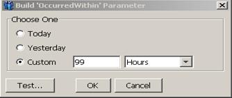
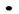
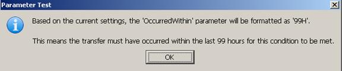
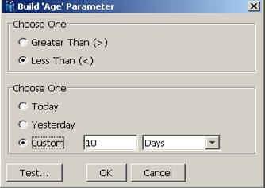
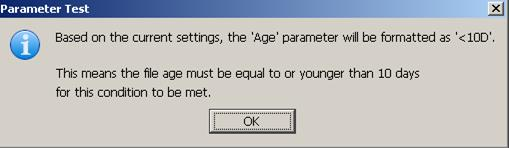
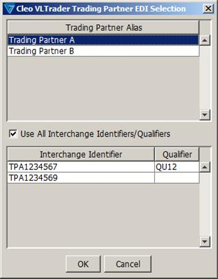

| Extended Commands / CHECK Command | |

Select 'Today', 'Yesterday', or 'Custom'. If 'Custom' is specified, then enter a value between 1 and 99 and a unit (e.g., '99 Hours' as shown above).
To obtain a written translation of your settings, click on the [Test...] button. You will receive a dialog such as follows.

Once you are satisfied with your settings, click the [OK] button.
This parameter is required for the file (-FIL) and directory (-DIR) options. It specifies the age condition for which the files/directories should be checked. The value of Age may be of the form "[<|>]nnn[D|H|M|S]" where nnn is a number from 0-999 and the letter following indicates days, hours, minutes, or seconds. The "<" or ">" symbol must be present to indicate whether the check is looking for ages greater than or equal to, or less than or equal to, the specified age. For example, "Age=>24H" indicates the check should look for files/directories equal to or older than 24 hours. The value of Age can also be "[<|>]Yesterday" or "[<|>]Today".
Notes:
1. To simply check for existence of a file/directory, use a parameter setting of ">0[D|H|M|S]". (It does not matter which unit is selected in this case.)
2. A parameter setting of "<0[D|H|M|S]", is really nonsensical because it is essentially looking for files/directories with future ages. This setting will be flagged as an error.
To enter this parameter, either type the string in directly or click on the cell to show the [Build...] button. The [Build...] button, if selected, will display the following wizard dialog that can be used to build the 'Age' parameter.

Select 'Greater Than (>)' or 'Less Than (<)'.
Select 'Today', 'Yesterday', or 'Custom'. If 'Custom' is specified, then enter a value between 0 and 999 and a unit (e.g., '10 Days' as shown above).
To obtain a written translation of your settings, click on the [Test...] button. You will receive a dialog such as follows.

Once you are satisfied with your settings, click the [OK] button.
These parameters, if specified, are for categorizing the result of the CHECK command (what is referred to as a “checkpoint”) within the Dashboards application SLA/KPI report.
Class – there are two settings for this parameter:
- SLA (Service Level Agreement) – verification of internal or external customer commitments
- KPI (Key Performance Indicator) – measurement for self-policing/self-improvement
Subclass – this parameter is freeform and can be set to any value that has meaning within the business use case.
Error - if the conditions of the CHECK are met, then the result should be classified as "Error". If the conditions of the CHECK are not met, then the result should be classified as "Success".
Success - if the conditions of the CHECK are met, then the result should be classified as "Success". If the conditions of the CHECK are not met, then the result should be classified as "Error".
Note that the Advanced property, 'Terminate On Fail', is only honored if this parameter is set and the result of running the CHECK is classified as "Error". Refer to Set Advanced Host Properties for a description of 'Terminate On Fail'.
To enter this parameter, either type the string in directly or click on the cell to show a drop-down list containing available options from which you can select. If [ConditionsMet] is not specified, then the result will always be classified as "None", irrespective of whether the conditions were met or not. Also, the CHECK operation will not be added to the transfer log.
This parameter is only applicable to the transfer (-TRA) option. When checking for a transfer, it's possible to qualify the status of the transfer. There are three settings for this parameter:
Delivered - this term applies to transfer statuses of 'Success', 'Warning', and 'Receipt Pending'. Although rarely seen, the 'Delete Error' and 'Delete Resolved' statuses are also included in this category.
Completed - this term applies to transfer statuses of 'Success', and 'Warning'. Although rarely seen, the 'Delete Error' and 'Delete Resolved' statuses are also included in this category.
Any - this term applies to any transfer status, including 'Error', 'Exception', and 'Interrupted'.
To enter this parameter, either type the string in directly or click on the cell to show a drop-down list containing available options from which you can select. If [Status] is not specified, the default status is Delivered.
This parameter is applicable to all options (-TRA, -FIL, and -DIR). For -TRA, it indicates the minimum number of transfers records found that meet the CHECK conditions. Its value should be a number from 1-99999. For the -FIL and -DIR options, [Count] can either be the keyword, "All", or a number from 1-99999. If a number is specified, it indicates the minimum number of files/directories that should meet the CHECK conditions. If "All" is specified, it indicates that all files/directories that are found according to the path specification must meet the age criteria. This implies that if no files/directories are found according to the path, the conditions will also be met.
To enter this parameter, either type the string in directly or click on the cell to show a drop-down list containing available options from which you can select (the drop-down list is only available for -FIL/-DIR operations). If [Count] is not specified, the default value is one (1).
The [Edi....] parameters are only applicable to the transfer (-TRA) option and only when database transfer logging is enabled. They indicate additional (EDI) conditions that must be met for a particular transfer record. For the 'Edi.Interchange.Sender' and 'Edi.FunctionalGroup.Sender' parameters, the syntax is "EDI Sender:Qualifier", where Qualifier is optional. For the 'Edi.Interchange.Receiver' and 'Edi.FunctionalGroup.Receiver' parameters, the syntax is "EDI Receiver:Qualifier", where Qualifier is optional. For the 'EDI.Transaction.Type' parameter, multiple transaction types may be entered, separated by a semicolon (';') or comma (',').
If any of the [EDI...] parameters contain embedded spaces, the Edit Command dialog will automatically replace these with '\s'. Note that if you are keying the command in directly from the freeform editor on the Commands tab, you will be responsible for inserting '\s' for every embedded space. In general, when typing commands without the use of the Edit Command dialog editor, special escape sequences must be used to identify certain characters:
\s = space character
\t = tab character
\n = newline character
\r = carriage return character
\\ = slash character
To enter these parameters, either type the string in directly or, for the 'Edi…Sender' / 'Edi…Receiver' parameters, click on the cell to show the [Build...] button. The [Build...] button, if selected, will display the following wizard dialog that can be used to build the 'Edi…Sender' / 'Edi…Receiver' parameters.

If a Trading Partner Alias is selected along with ‘Use All Interchange Identifiers/Qualifiers’, then a trading partner alias variable will be used. This will match any of the Interchange Identifiers/Qualifiers configured for the Trading Partner. If ‘Use All Interchange Identifiers/Qualifiers’ is not selected, then the user can select a specific Interchange Identifier/Qualifier pair to be used. Once the selections have been made and the [OK] button is selected, then the selection will be placed in the appropriate field depending on which [Build…] button was selected.